Loch Transportes e Terraplanagem
Em meados de 1988, Pedro Salesio Loch, sócio fundador, iniciou suas atividades no ramo de transporte. Posteriormente, expandiu seu negócio para o comércio de areia, brita e derivados. Em 2005, adquiriu seu segundo caminhão, que passou a ser destinado ao seu filho, Pedro Henrique da Silva Loch. A partir desse momento, começaram a trabalhar juntos.
Em 2010, fundaram a Loch Terraplanagem, diversificando suas operações para incluir transporte de máquinas e equipamentos, venda e transporte de britas e agregados, locação de máquinas e equipamentos, além de serviços de terraplanagem. A empresa se consolidou no mercado pela pontualidade, qualidade de serviço e compromisso com o cliente.
- Transporte de máquinas e equipamentos: Transporte de máquinas de pequeno a grande porte com segurança e agilidade.
- Transporte e comércio de agregados: Fornecimento e transporte de britas, areia e saibro em geral.
- Locação de máquinas, equipamentos e caminhões: Locação de uma vasta gama de equipamentos e caminhões para diversos tipos de serviços.
- Serviços de terraplanagem: Realização de serviços de terraplanagem para preparação de terrenos e obras de infraestrutura.
Serviços
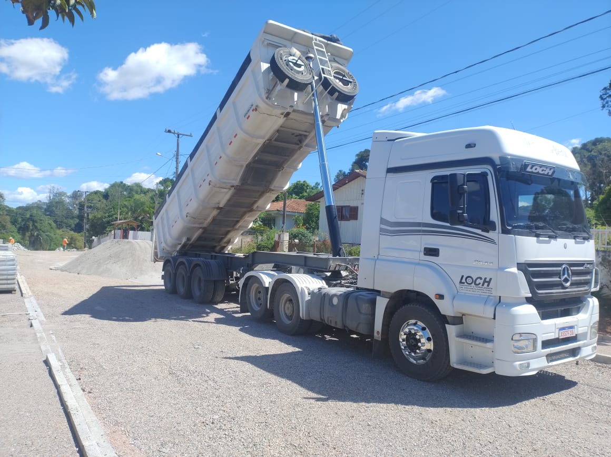
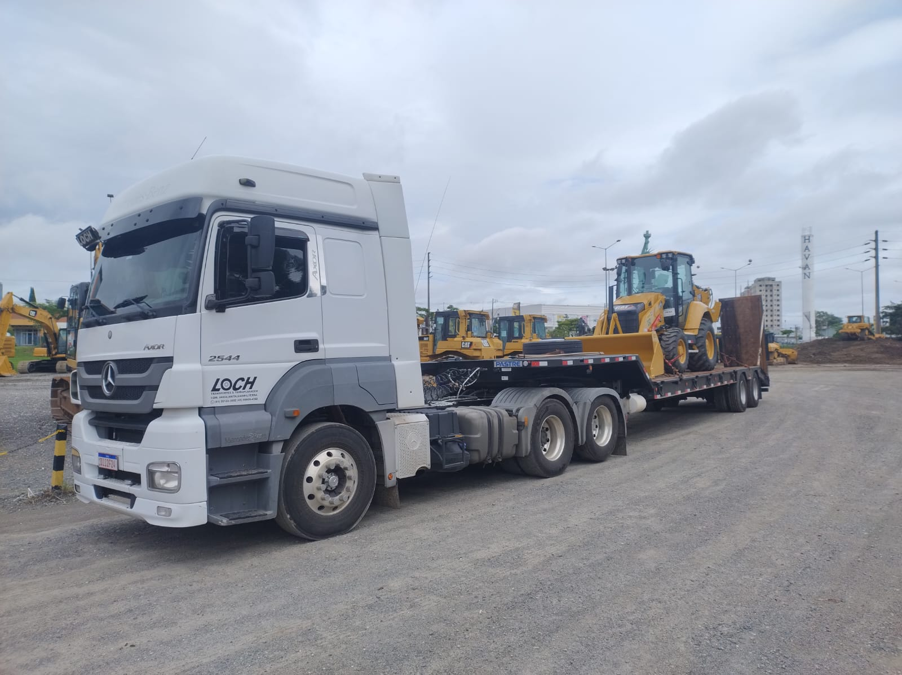
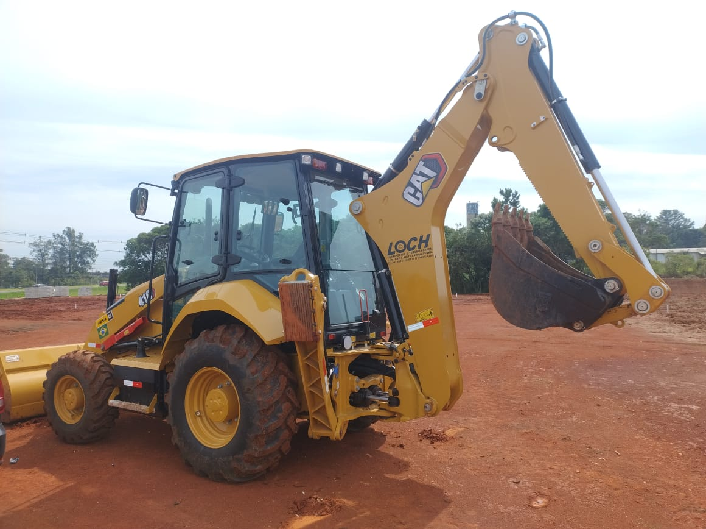
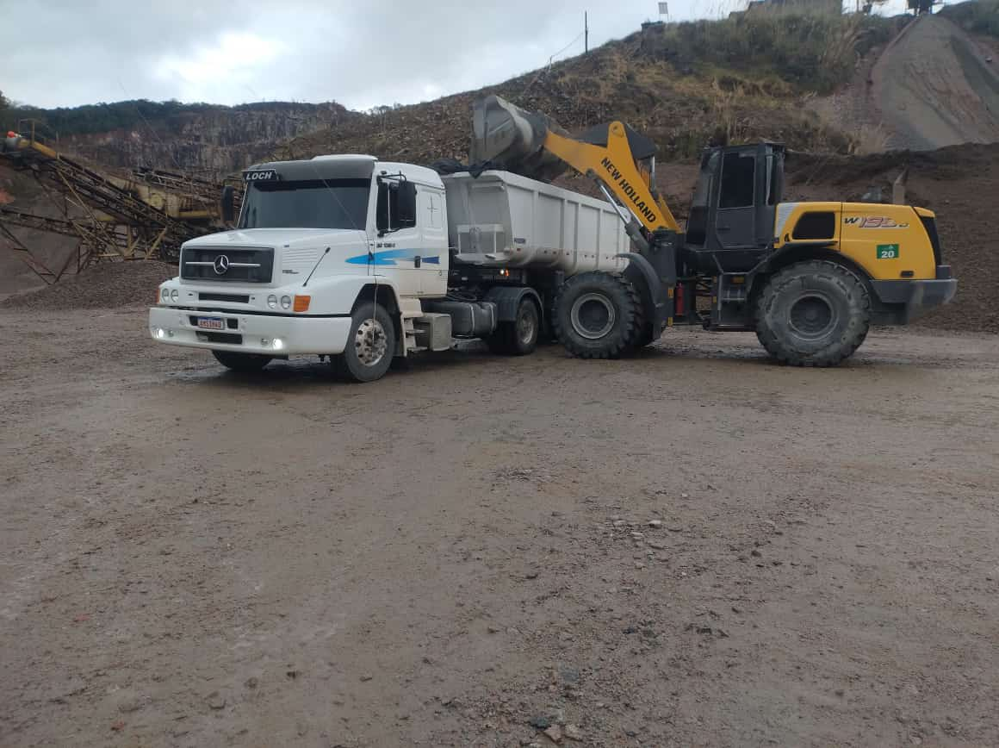
Máquinas
Máquina
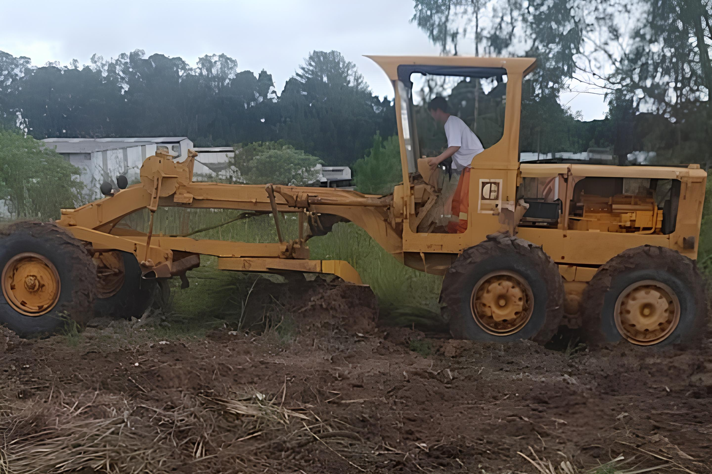
Máquina
Máquina
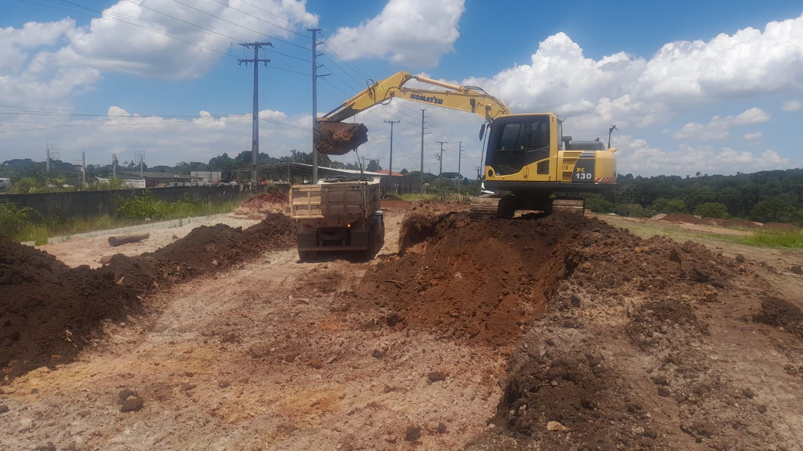
Máquina
Caminhões
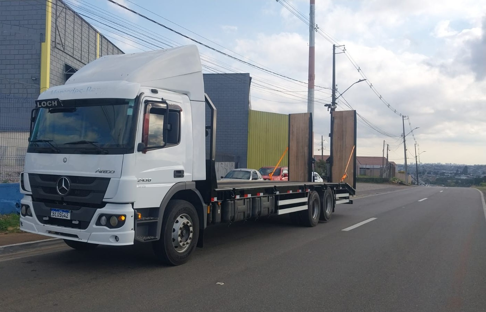
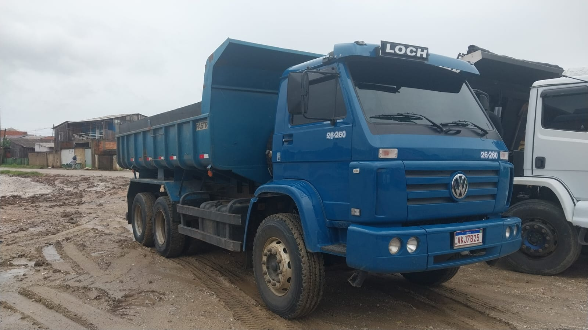
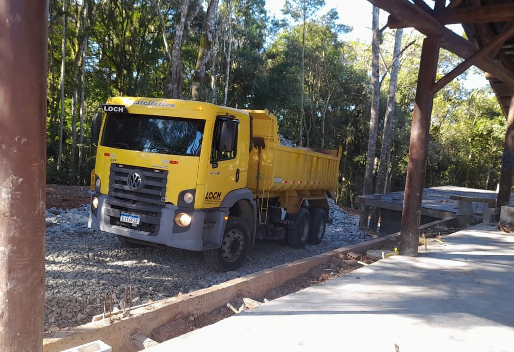
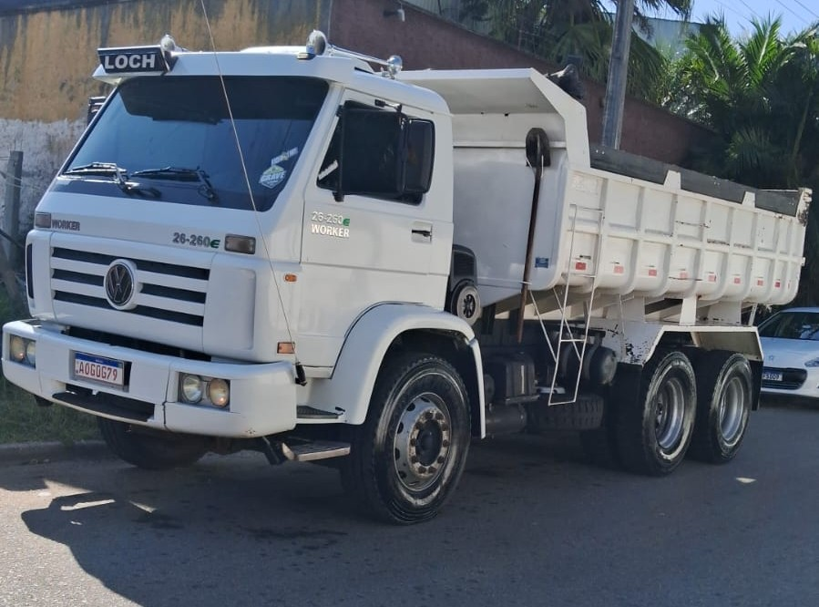
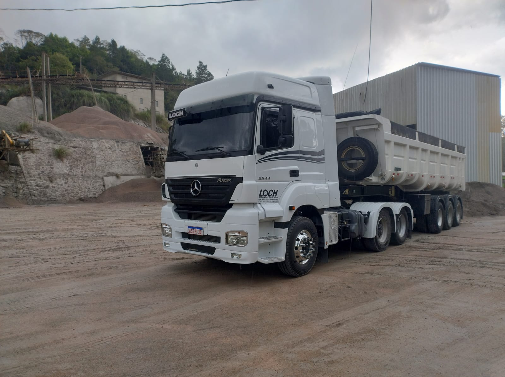
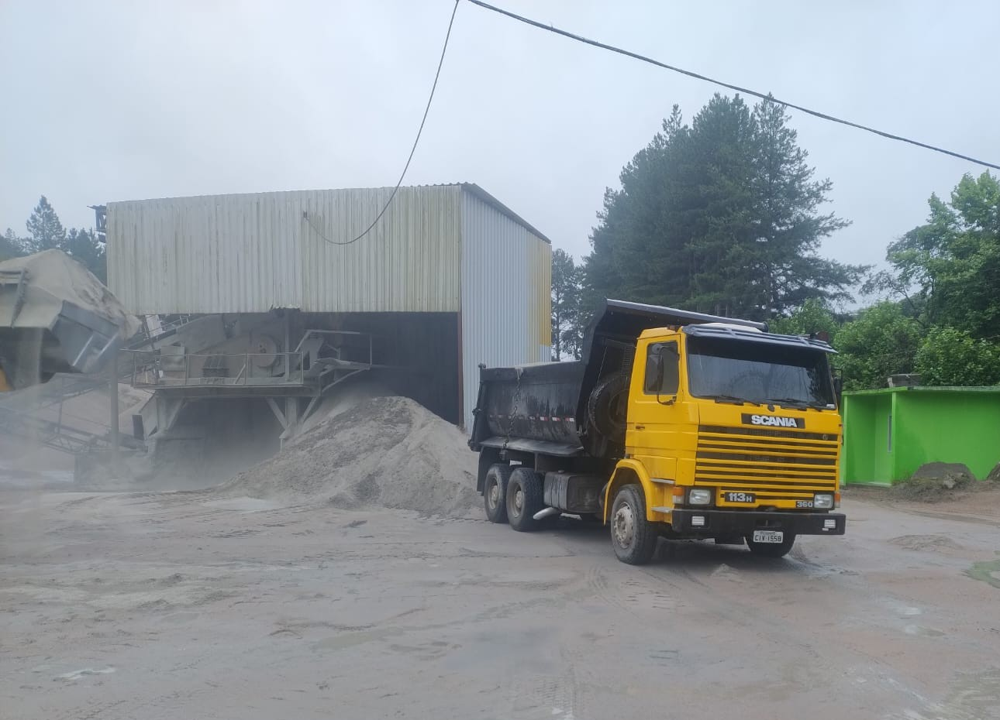
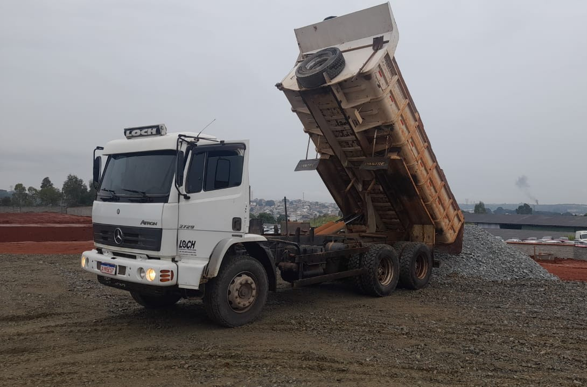
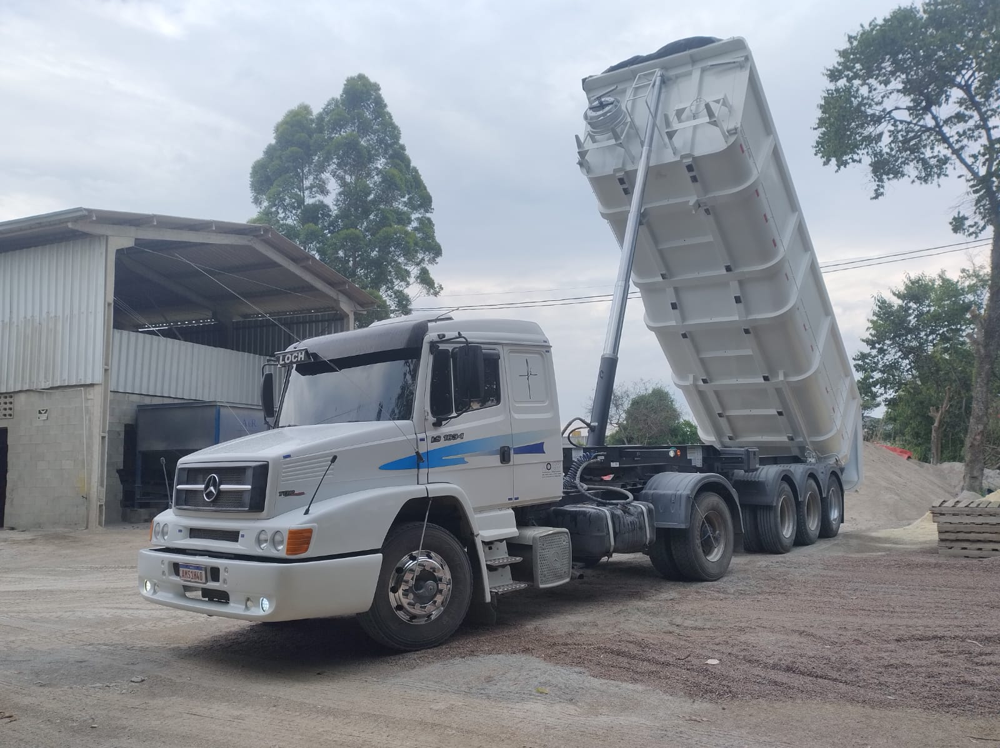